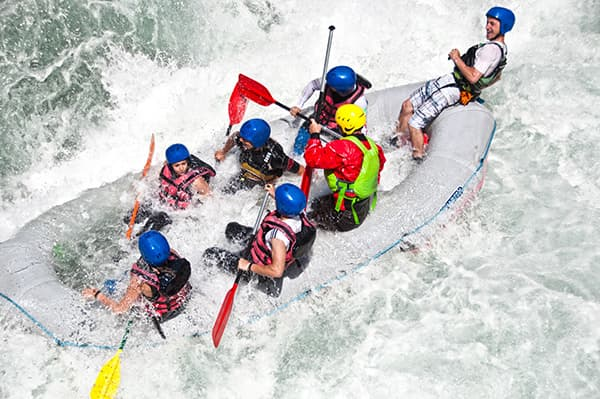
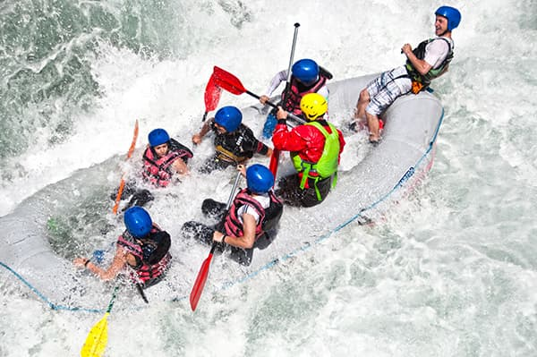

Experience the Thrill of Whitewater Rafting Adventure—book your trip today!
Experience the Thrill of Whitewater Rafting Adventure—book your trip today!
Founded in 1994 on the banks of the River Tay in Scotland, Splash White Water Rafting began with a simple mission: to share the thrill of river adventure with people from all walks of life. Starting with just a few rafts and a dedicated team of outdoor enthusiasts, Splash has grown into one of the UK’s leading adventure activity providers, offering white water rafting, canyoning, kayaking, and more. Over the years, we’ve welcomed thousands of guests—from families to corporate teams—always prioritizing safety, sustainability, and unforgettable experiences. Today, Splash continues to lead in Scottish outdoor tourism and international adventure travel, staying true to our roots: real adventure, real people, and real rivers.
 
